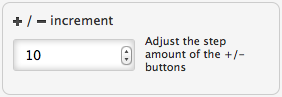

- Open the application preferences, either from the main application menu or from the customize menu
 , or use the keyboard shortcut
⌘,
, or use the keyboard shortcut
⌘, - Enter a value in the input field for + / - increment.
 - Close the preferences panel.
- The and buttons in the status bar will now adjust the viewport with by your chosen value.